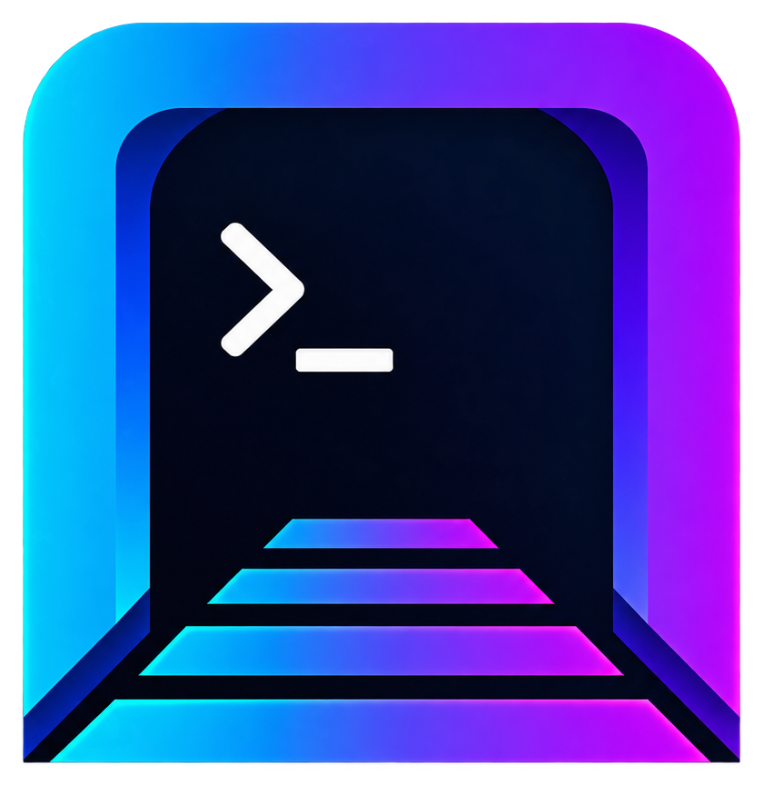

One Command, Many Hosts
Run operational commands across selected hosts without opening a separate terminal for every machine.

Your Entire SSH Estate. One Powerful Workspace.
Manage every SSH connection from a single browser-based workspace. Deploy keys across your entire domain in one click, execute commands across multiple machines at once, browse and manage remote files, launch live shells instantly, and route traffic through streamlined proxy workflows.
curl -fsSL https://raw.githubusercontent.com/H0wl3r/portl/main/install.sh | sh && /usr/local/bin/portl startPortl turns scattered SSH tasks into controlled workflows your team can run quickly, repeat safely, and audit from one place.
Run operational commands across selected hosts without opening a separate terminal for every machine.
Generate, store, copy, download, and distribute SSH keys domain-wide with a one-click workflow.
Drop into live shell sessions from the web UI when a host needs hands-on work.
Browse, upload, download, rename, move, and delete files without leaving the host workspace.
Create direct or chained SOCKS/HTTP routes, start and stop profiles, and copy ready-to-use proxychains config.
Separate admin, operator, and viewer access so people get the controls they need without excess exposure.
Move from high-level visibility to hands-on shell, file, key, and host operations without leaving the Portl workspace.